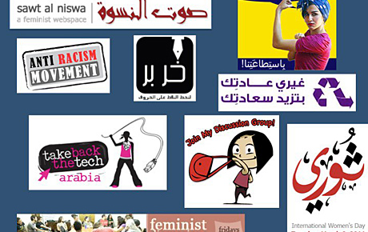

پذيرش > تریبون > گزارش كمپين > شبکه فمینیستی نسویه در لبنان / شهرزاد امین


 شبکه فمینیستی نسویه در لبنان / شهرزاد امین شبکه فمینیستی نسویه در لبنان / شهرزاد امین
2 خرداد 1391 - - نسخه قابل چاپ
تغییر برای برابری: شبکه فمینیستی نسویه (فمینیست) دو سالِ پیش، پس از سلسله جلسات و بحث هایی در لبنان تشکیل شد. در ابتدا این شبکه تنها یک دفتر در بیروت داشت. اما پس از مدتی قرار بر این شد که مکان ملاقاتی برای دیدار و هم نشینی هم داشته باشند.در حال حاضر نسویه کافه ای را دایر کرده ا ست که در آن سخنرانی، نمایشگاه، ناهارهای همراه با کتابخوانی و فعالیتهای دیگر را ترتیب می دهد.
نسویه تنها سازمان فمینیستی زنان جوان در لبنان است، هیت مدیره ندارد و از سبک سازماندهی سلسله مراتبی پیروی نمی کند. اعضای شبکه به صورت غیر متمرکز و مستقل حول حوزه های مورد علاقه شان فعالیت می کنند.
نسویه از سه اصلِ پایه ای پیروی می کند:
1 راه اندازی ابتکارات فمینیستی نو آورانه که با اشکال مختلف پدر سالاری و تبعیض جنسی مبارزه می کند.
2 متحد کردن اکتیویست ها و گروه های حاشیه ای فعال در حوزه مسائل جنسیتی جهت تشکیل جنبشهای قویتر.
3 حمایت از بسیج و تقویت منابع عمومی از طریق اطلاع رسانی و البته محبت وعشق برای پشتیبانی از اکتیویستهایی که در جهت بوجود آوردن تغییرات اجتماعی مبارزه می کنند.
نسویه فعالیتهای خود را از طریق جمع آوری حمایت های مالی مردم و دریافت حمایت ارگانهای بین المللی مانند (1)Mama cash تامین می کند. شبکه نسویه بر حفظ استقلال اقتصادی و سیاسی خود تاکید زیادی دارد و به همین دلیل هیچگونه حمایت اقتصادی از دولت و بنیاد های لبنان را نمی پذیرد.
شبکه نسویه امروزه 250 عضو ثابت دارد و مرتبا در حال رشد است. هر فردی که می خواهد در جهت اهداف فمینیستی فعالیت کند می تواند در گروههای مختلف کاری شبکه مشارکت داشته و یا گروه کاری خویش را در جهت اهداف شبکه راه بیاندازند. اعضای شبکه از تنوع فکری، عقیدتی، مذهبی، قومی و جنسیتی متفاوت برخوردارند، مذهبی ها، لامذهبها، محجبه ها، همجنس گراها... همگی عضو هستند و هویت همدیگر را می پذیرند. شبکه ی زنان نسوان یک سازمان سکولار است که از هنگام تاسیسش در لبنان در جهت ایجاد تغییرات اجتماعی فعالیت کرده و با تمرکز بر جنبه های سیاسی حقوق زنان از طریق تظاهرات، کمپین، سخنرانی و فعالیتهای فرهنگی مبارزه می کند.
نسویه برنامه هایی مانند تظاهرات علیه خشونت و آزار جنسی، علیه نژادپرستی و یا تبعیض های قانونی علیه زنان و برای حمایت ازحقوق زنان خانه دار و کارگران خانگی، را سازماندهی میکند. همچنین بسیج و همکاری با سایر سازمانهای زنان جهت تغییر قوانین را در دستور کار خود دارد. از آنجایی که تغییرات اجتماعیِ به نفع زنان خواست پایه ای نسویه می باشد، فعالیت های این شبکه ی فمینیستی زنان عمدتن فعالیتی سیاسی با پرسپکتیو فمینیستی به شمار می آید. آنان برنامه احزاب سیاسی را بررسی و نقد می کنند. در کنار ترتیب دادن تظاهرات و اعتراضات برای تاثیر گذاری بر افکار عمومی مردم، گاهی اعضای شبکه از طریق ملاقات با سیاستمداران برای تغییر قوانین تبعیض آمیز بر آنها فشار می آورند.
در لبنان قانونی که خشونت علیه زنان در خانه را جرم قلمداد کند وجود ندارد و این یکی از عمده ترین مواردی است که شبکه نسویه در ائتلاف و همکاری با سایر سازمان های زنان، در جهت تصویب آن مبارزه می کند.

رانیا ایگناتوس کنشگرحقوق زنان و عضو شبکه نسویه در برنامه های مبارزه با آزارهای جنسی فعالیت می کند. سبک کار و تعهد نسویه در سال های اخیر الهام بخش زنان در کشورهای عربی بوده است. وی در پاسخ سوال نشریه پرسپکتیو فمینیستی که آیا احزاب سیاسی بنیادگرا مانعی برای فعالیتهای آنان ایجاد نمی کند می گوید: احزاب بنیادگرا در لبنان بخشی از نظام سیاسی هستند و نظرات، برنامه ریزی ها و اهدافی نظیر سایر احزاب سیاسی در قدرت دارد. سیستم سیاسی حاکم بر لبنان برای بقای خویش متکی بر فرقه گرایی است. ما مخالف فرقه گرایی و تقسیم جامعه بر اساس مذهب و ملیت هستیم چرا که ما معتقدیم این تقسیم بندی ها به زنان ضربه می زند. احزاب بنیادگرا شاید به نظرات ما در این زمینه واکنش منفی نشان بدهد اما از خشونت فیزیکی بر علیه ما استفاده نکرده اند. ما خود را بیرون از گروه بندی ها و رقابتهای حزبی قرار می دهیم و به همین دلیل نیز از دید احزاب در قدرت، تهدید محسوب نمی شویم، ما در عمل رقیب سیاسی آنان نیستیم. آنچه ما به دنبالش هستیم این است که بر اساس ارزشهای فمینیستی مان کل این نظام باید برچیده شود.
نسویه شبکه ای در حال گسترش است، وبسایت این شبکه حاوی اطلاعات زیادی با مقالات عربی، فرانسه و انگلیسی است. یکی از گسترده ترین برنامه های نسویه مبارزه بر علیه آزارهای جنسی است. این سازمان در راستای بالا بردن سطح آگاهی در مورد مقابله با آزارهای جنسی سلسله فیلم های انیمیشن زن شجاعی به نام سلوی را در وبسایت خود منتشر کرده است. سلوی آزادانه همه جا می رود و هر گاه با آزار و مزاحمت جنسی، از سوی مردان در محل کار و خیابان و یا از پلیس، مواجه شود با کیفی که همیشه همراه دارد آنان را کتک می زند و از صحنه خارج می کند

فعالیت های شبکه ی زنان نسویه مدل خوبی برای فعالیت زنان در منطقه ی خاورمیانه است. این سازمان همکاری های متعددی را با زنان تونسی، مصری و لیبیایی پس از وقوع انقلاب در این کشورها داشت، همکاری هایی مانند برگزاری نمایشگاه، کارگاه، جلسات بحث و گفتگو و از این دست. تاثیر چنین سازمان هایی در آینده ی زنان در خاورمیانه بدون شک بسیار زیاد خواهد بود.
منبع: http://www.nasawiya.org/web/
ارسال به
بالاترین
،
توییتر
،
فریندفید
،
فیسبوک
در همين بخش :
 دهمین دورۀ مراسم تندیس صدیقه دولت آبادی ۱۳۹۲ دهمین دورۀ مراسم تندیس صدیقه دولت آبادی ۱۳۹۲
کارت پستالهایی به بهانهی هشت مارس و به یاد همهی مبارزین راه برابری
بیانیه بیش از 350 تن از مدافعان حقوق زنان به مناسبت روز جهانی زن؛ زنان هر روز فرودستتر میشوند
لباسی که برای تن ما دوخته اند! /اعظم بهرامی
چالشها و چشمانداز فعالیت مدنی زنان
ديگر بخش ها :
طرح یک میلیون امضا
|
مقالات
|
سایت نوشته ها
|
اخبار
|
گزارش كمپين
|
گفت و گو
|
علیه سکوت
|
كوچه به كوچه
|
نامه های شما
|
گزارش ویژه
|
گفتگو با اعضا
|
ویژه سالگرد کمپین
|
تصویر برابری
|
دل آرام علی
|
تریبون
|
مقالات
|
تاریخ شفاهی
|
خارج از چارچوب
|
کتابخانه
|
درباره کمپین
|
کمپین در شهرها
|
کمپین در بند
|
صدای تغییر
|
ویژه 22 خرداد
|
لایحه حمایت از خانواده
|
گالری
|
عشا مومنی
|
امیر یعقوبعلی
|
خدیجه مقدم
|
راحله عسگری زاده و نسیم خسروی
|
پروین اردلان،جلوه جواهری، مریم حسین خواه، ناهید کشاورز
|
زینب پیغمبرزاده
|
سعیده امین، سارا ایمانیان، محبوبه حسین زاده، ناهید کشاورز و همایون نامی
|
احترام شادفر
|
نسیم سرابندی زاده،فاطمه دهدشتی
|
وبلاگ مهمان
|
پرونده خرم آباد
|
دستگیری ها
|
مریم مالک
|
پرستو اللهیاری
|
مهرنوش اعتمادی
|
سمیه رشیدی
|
Other Languages
|
همراهان
|
«فراخوان کمپین ده روز با بهاره هدایت»
| English
|